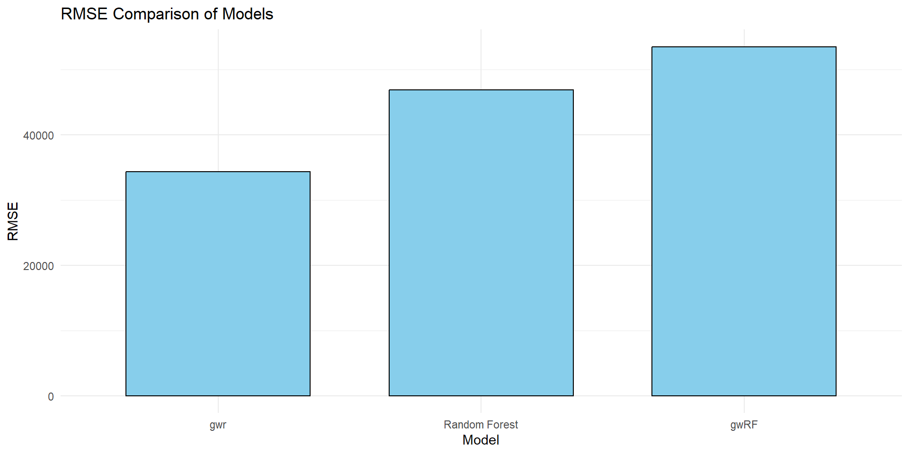
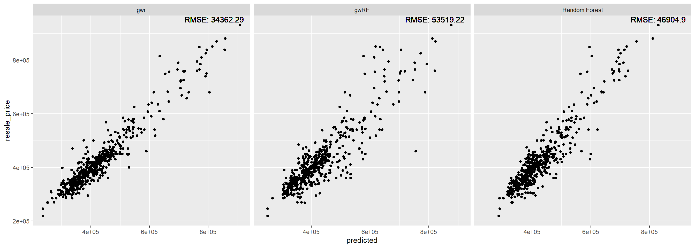
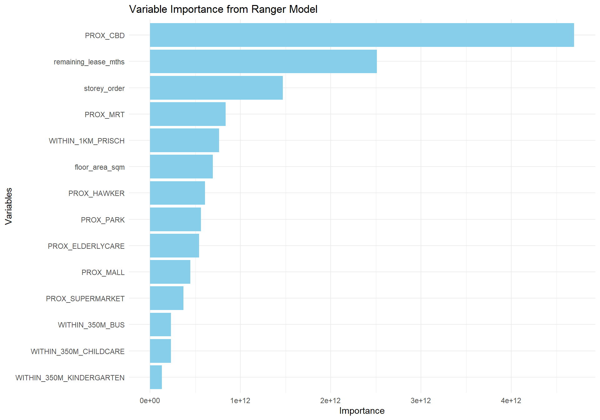

1. Load Required Packages
Let’s first install and load the packages needed for this exercise.
sf : Manages and manipulates spatial data using simple feature (sf) objects.
spdep : Provides spatial dependency tools, including spatial weights and clustering methods.
GWModel : Facilitates geographically weighted modeling, such as GWR and GWGLM, for spatially varying relationships.
SpatialML : Implements machine learning methods tailored for spatial data analysis.
tmap : Creates thematic maps for spatial data visualization, supporting interactive mapping.
rsample : Aids in data resampling for model validation, such as cross-validation and bootstrap.
yardstick : Evaluates model performance metrics, particularly for regression and classification tasks.
tidyverse : A suite of packages for data manipulation, visualization, and analysis in a tidy format.
knitr : Produces dynamic reports, supporting R code chunks for seamless integration in documents.
kableExtra : Enhances table formatting in R, allowing for customised and aesthetic tables.
spatialRF : Specialises in spatial random forests, focusing on spatially dependent data predictions and modeling.
:: p_load (sf, spdep, GWModel, SpatialML, tmap, rsample, yardstick, tidyverse, knitr, kableExtra, spatialRF)
Installing package into 'C:/Users/Samantha/AppData/Local/R/win-library/4.4'
(as 'lib' is unspecified)
Warning: package 'GWModel' is not available for this version of R
A version of this package for your version of R might be available elsewhere,
see the ideas at
https://cran.r-project.org/doc/manuals/r-patched/R-admin.html#Installing-packages
Warning: Perhaps you meant 'GWmodel' ?
Warning: unable to access index for repository http://www.stats.ox.ac.uk/pub/RWin/bin/windows/contrib/4.4:
cannot open URL 'http://www.stats.ox.ac.uk/pub/RWin/bin/windows/contrib/4.4/PACKAGES'
Warning in p_install(package, character.only = TRUE, ...):
Warning in library(package, lib.loc = lib.loc, character.only = TRUE,
logical.return = TRUE, : there is no package called 'GWModel'
Warning in pacman::p_load(sf, spdep, GWModel, SpatialML, tmap, rsample, : Failed to install/load:
GWModel
2. Preparing Data
2.1 Data Import
<- read_rds ("data/rds/mdata.rds" )
2.2 Data Sampling
Calibrating predictive models can be computationally intensive , especially when random forest method is used. For quick prototyping, a 10% sample will be selected at random from the data by using the code chunk below.
set.seed (1234 )<- mdata %>% sample_n (1500 )
Note that we do not need to use all of the data in predictive modelling, in fact we can choose to sample data from the entire dataset.
2.3 Checking of Overlapping Points
<- HDB_sample %>% mutate (overlap = lengths (st_equals (., .)) > 1 )summary (overlapping_points$ overlap)
Mode FALSE TRUE
logical 1047 453
When using GWmodel to calibrate explanatory or predictive models, it is very important to ensure that there are no overlapping point features
2.4 Spatial Jitter
In the code code chunk below, st_jitter()sf package is used to move the point features by 5m to avoid overlapping point features.
<- HDB_sample %>% st_jitter (amount = 5 )
One metre is considered safe enough - no need to use five metres.
3. Data Sampling
The entire data are split into training and test data sets with 65% and 35% respectively by using initial_split() of rsample package. rsample is one of the package of tigymodels.
set.seed (1234 )<- initial_split (HDB_sample, prop = 6.67 / 10 ,)<- training (resale_split)<- testing (resale_split)
It is always a good practice to save the training and test data sets for subsequent used.
write_rds (train_data, "data/rds/train_data.rds" )write_rds (test_data, "data/rds/test_data.rds" )
4. Multicollinearity check In order to avoid multicollineariy. In the code chunk below, ggcorrmat()ggstatsplot is used to plot a correlation matrix to check if there are pairs of highly correlated independent variables.
<- mdata %>% st_drop_geometry ():: ggcorrmat (mdata_nogeo[, 2 : 17 ])
5. Building a non-spatial multiple linear regression
<- lm (resale_price ~ floor_area_sqm + + remaining_lease_mths + + PROX_ELDERLYCARE + PROX_HAWKER + + PROX_PARK + PROX_MALL + + WITHIN_350M_KINDERGARTEN + + WITHIN_350M_BUS + data= train_data):: ols_regress (price_mlr)
Model Summary
--------------------------------------------------------------------------
R 0.862 RMSE 60813.316
R-Squared 0.742 MSE 3754578098.252
Adj. R-Squared 0.739 Coef. Var 14.255
Pred R-Squared 0.734 AIC 24901.005
MAE 45987.256 SBC 24979.529
--------------------------------------------------------------------------
RMSE: Root Mean Square Error
MSE: Mean Square Error
MAE: Mean Absolute Error
AIC: Akaike Information Criteria
SBC: Schwarz Bayesian Criteria
ANOVA
-------------------------------------------------------------------------------
Sum of
Squares DF Mean Square F Sig.
-------------------------------------------------------------------------------
Regression 1.065708e+13 14 761220078101.236 202.745 0.0000
Residual 3.698259e+12 985 3754578098.252
Total 1.435534e+13 999
-------------------------------------------------------------------------------
Parameter Estimates
------------------------------------------------------------------------------------------------------------------
model Beta Std. Error Std. Beta t Sig lower upper
------------------------------------------------------------------------------------------------------------------
(Intercept) 115703.696 34303.409 3.373 0.001 48387.533 183019.860
floor_area_sqm 2778.618 292.262 0.165 9.507 0.000 2205.089 3352.146
storey_order 12698.165 1070.950 0.211 11.857 0.000 10596.559 14799.771
remaining_lease_mths 350.252 14.596 0.450 23.997 0.000 321.610 378.894
PROX_CBD -16225.588 630.092 -0.572 -25.751 0.000 -17462.065 -14989.110
PROX_ELDERLYCARE -11330.930 3220.845 -0.061 -3.518 0.000 -17651.436 -5010.423
PROX_HAWKER -19964.070 4021.046 -0.087 -4.965 0.000 -27854.872 -12073.268
PROX_MRT -39652.516 5412.288 -0.130 -7.326 0.000 -50273.456 -29031.577
PROX_PARK -15878.322 4609.199 -0.061 -3.445 0.001 -24923.300 -6833.344
PROX_MALL -15910.922 6438.111 -0.048 -2.471 0.014 -28544.911 -3276.933
PROX_SUPERMARKET -18928.514 13304.965 -0.025 -1.423 0.155 -45037.848 7180.821
WITHIN_350M_KINDERGARTEN 9309.735 2024.293 0.079 4.599 0.000 5337.313 13282.157
WITHIN_350M_CHILDCARE -1619.514 1180.948 -0.026 -1.371 0.171 -3936.977 697.948
WITHIN_350M_BUS -447.695 738.715 -0.011 -0.606 0.545 -1897.331 1001.940
WITHIN_1KM_PRISCH -10698.012 1543.511 -0.138 -6.931 0.000 -13726.960 -7669.065
------------------------------------------------------------------------------------------------------------------
6. Multicollinearity check with VIF
<- performance:: check_collinearity (price_mlr)kable (vif, caption = "Variance Inflation Factor (VIF) Results" ) %>% kable_styling (font_size = 18 )
Variance Inflation Factor (VIF) Results
floor_area_sqm
1.146686
1.085743
1.250945
1.070834
0.8720785
0.7993954
0.9210287
storey_order
1.206020
1.135720
1.312734
1.098189
0.8291736
0.7617690
0.8804986
remaining_lease_mths
1.343645
1.254833
1.463410
1.159157
0.7442440
0.6833358
0.7969186
PROX_CBD
1.887898
1.733977
2.074096
1.374008
0.5296898
0.4821378
0.5767088
PROX_ELDERLYCARE
1.140418
1.080572
1.244716
1.067904
0.8768712
0.8033960
0.9254357
PROX_HAWKER
1.183865
1.116887
1.289223
1.088056
0.8446907
0.7756609
0.8953457
PROX_MRT
1.211390
1.140307
1.318485
1.100632
0.8254980
0.7584464
0.8769566
PROX_PARK
1.186122
1.118797
1.291599
1.089092
0.8430839
0.7742340
0.8938169
PROX_MALL
1.435504
1.335252
1.565736
1.198125
0.6966193
0.6386771
0.7489224
PROX_SUPERMARKET
1.226727
1.153448
1.335000
1.107577
0.8151773
0.7490638
0.8669656
WITHIN_350M_KINDERGARTEN
1.123989
1.067172
1.228865
1.060183
0.8896886
0.8137594
0.9370564
WITHIN_350M_CHILDCARE
1.387119
1.292841
1.511748
1.177760
0.7209189
0.6614860
0.7734902
WITHIN_350M_BUS
1.193498
1.125056
1.299398
1.092473
0.8378731
0.7695869
0.8888447
WITHIN_1KM_PRISCH
1.508943
1.399770
1.647930
1.228390
0.6627154
0.6068219
0.7144029
7. Predictive Modelling with gwr
Warning: package 'GWmodel' was built under R version 4.4.2
Loading required package: robustbase
Loading required package: sp
Loading required package: Rcpp
Attaching package: 'Rcpp'
The following object is masked from 'package:rsample':
populate
Welcome to GWmodel version 2.4-2.
<- bw.gwr (resale_price ~ floor_area_sqm + + remaining_lease_mths + + PROX_ELDERLYCARE + PROX_HAWKER + + PROX_PARK + PROX_MALL + + WITHIN_350M_KINDERGARTEN + + WITHIN_350M_BUS + data= train_data,approach= "CV" ,kernel= "gaussian" ,adaptive= TRUE ,longlat= FALSE )
Adaptive bandwidth: 625 CV score: 3.459032e+12
Adaptive bandwidth: 394 CV score: 3.231786e+12
Adaptive bandwidth: 250 CV score: 2.914736e+12
Adaptive bandwidth: 162 CV score: 2.610897e+12
Adaptive bandwidth: 107 CV score: 2.240188e+12
Adaptive bandwidth: 73 CV score: 1.971641e+12
Adaptive bandwidth: 52 CV score: 1.797271e+12
Adaptive bandwidth: 39 CV score: 1.659472e+12
Adaptive bandwidth: 31 CV score: 1.573963e+12
Adaptive bandwidth: 26 CV score: 1.550147e+12
Adaptive bandwidth: 23 CV score: 1.542544e+12
Adaptive bandwidth: 21 CV score: 1.518885e+12
Adaptive bandwidth: 19 CV score: 1.515965e+12
Adaptive bandwidth: 19 CV score: 1.515965e+12
<- gwr.basic (formula = resale_price ~ floor_area_sqm + + remaining_lease_mths + + PROX_ELDERLYCARE + PROX_HAWKER + + PROX_PARK + PROX_MALL + + WITHIN_350M_KINDERGARTEN + + WITHIN_350M_BUS + data= train_data,bw= 20 , kernel = 'gaussian' , adaptive= TRUE ,longlat = FALSE )
<- bw.gwr (resale_price ~ floor_area_sqm + + remaining_lease_mths + + PROX_ELDERLYCARE + PROX_HAWKER + + PROX_PARK + PROX_MALL + + WITHIN_350M_KINDERGARTEN + + WITHIN_350M_BUS + data= test_data,approach= "CV" ,kernel= "gaussian" ,adaptive= TRUE ,longlat= FALSE )
Adaptive bandwidth: 316 CV score: 1.752181e+12
Adaptive bandwidth: 203 CV score: 1.635856e+12
Adaptive bandwidth: 132 CV score: 1.452381e+12
Adaptive bandwidth: 89 CV score: 1.292305e+12
Adaptive bandwidth: 61 CV score: 1.115867e+12
Adaptive bandwidth: 45 CV score: 1.007764e+12
Adaptive bandwidth: 34 CV score: 886240690082
Adaptive bandwidth: 28 CV score: 859792519354
Adaptive bandwidth: 23 CV score: 856247388819
Adaptive bandwidth: 21 CV score: 846203688028
Adaptive bandwidth: 19 CV score: 837013751208
Adaptive bandwidth: 18 CV score: 8.32968e+11
Adaptive bandwidth: 17 CV score: 834218488856
Adaptive bandwidth: 18 CV score: 8.32968e+11
<- gwr.predict (formula = resale_price ~ floor_area_sqm + + remaining_lease_mths + PROX_CBD + + PROX_HAWKER + PROX_MRT + + PROX_MALL + PROX_SUPERMARKET + + WITHIN_350M_CHILDCARE + + WITHIN_1KM_PRISCH, data= train_data, predictdata = test_data, bw= 20 , kernel = 'gaussian' , adaptive= TRUE , longlat = FALSE )
<- as.data.frame ($ SDF$ prediction) %>% rename (gwr_pred = "gwr_pred$SDF$prediction" )
8. Predictive Modelling with RF method
Firstly, code chunk below is used to extract the coordinates of training and test data sets
<- st_coordinates (HDB_sample)<- st_coordinates (train_data)<- st_coordinates (test_data)
Next, code chunk below is used to drop the geometry column of both training and test data sets.
<- train_data %>% st_drop_geometry ()
set.seed (1234 )<- ranger (resale_price ~ floor_area_sqm + storey_order + + PROX_CBD + PROX_ELDERLYCARE + + PROX_MRT + PROX_PARK + PROX_MALL + + WITHIN_350M_KINDERGARTEN + + WITHIN_350M_BUS + data= train_data_nogeom)
Ranger result
Call:
ranger(resale_price ~ floor_area_sqm + storey_order + remaining_lease_mths + PROX_CBD + PROX_ELDERLYCARE + PROX_HAWKER + PROX_MRT + PROX_PARK + PROX_MALL + PROX_SUPERMARKET + WITHIN_350M_KINDERGARTEN + WITHIN_350M_CHILDCARE + WITHIN_350M_BUS + WITHIN_1KM_PRISCH, data = train_data_nogeom)
Type: Regression
Number of trees: 500
Sample size: 1000
Number of independent variables: 14
Mtry: 3
Target node size: 5
Variable importance mode: none
Splitrule: variance
OOB prediction error (MSE): 2289284270
R squared (OOB): 0.8406868
<- cbind (%>% st_drop_geometry ()
<- predict (rf, data = test_data_nogeom)
The output of predict() of ranger is object of class ranger with elements. Code chunk below is used to extract values from predictions of predicted classes and save the values in a data frame called rf_pred_df .
<- as.data.frame (rf_pred$ predictions) %>% rename (rf_pred = "rf_pred$predictions" )
9. Predictive Modelling with SpatialML
set.seed (1234 )<- grf.bw (formula = resale_price ~ floor_area_sqm + storey_order + + PROX_CBD + PROX_ELDERLYCARE + + PROX_MRT + PROX_PARK + PROX_MALL + + WITHIN_350M_KINDERGARTEN + + WITHIN_350M_BUS + dataset= train_data_nogeom, kernel= "adaptive" ,coords= coords_train)
set.seed (1234 )<- grf (formula = resale_price ~ floor_area_sqm + storey_order + + PROX_CBD + PROX_ELDERLYCARE + + PROX_MRT + PROX_PARK + PROX_MALL + + WITHIN_350M_KINDERGARTEN + + WITHIN_350M_BUS + dframe= train_data_nogeom, bw= 20 ,kernel= "adaptive" ,coords= coords_train)
<- cbind (%>% st_drop_geometry ()
In the code chunk below, predict.grf() of spatialML for predicting re-sale prices in the test data set (i.e. test_data_nogeom )
<- predict.grf (grf_ad, x.var.name= "X" ,y.var.name= "Y" , local.w= 1 ,global.w= 0 )
Next, the code chunk below is used to convert the output from grf_pred into a data.frame.
<- as.data.frame (grf_pred)
10. Model Comparison
10.1 Combine model outputs
<- test_data %>% select (resale_price) %>% cbind (gwr_pred_df) %>% cbind (rf_pred_df) %>% cbind (grf_pred_df)
10.2 Transposing data
<- test_data_pred %>% st_drop_geometry () %>% pivot_longer (cols = ends_with ("pred" ), names_to = "model" , values_to = "predicted" )
10.3 Renaming columns
<- c (gwr_pred = "gwr" ,rf_pred = "Random Forest" ,grf_pred = "gwRF" )<- test_longer %>% mutate (model = recode (!!! model_labels))
10.4 Computing RMSE
<- test_longer %>% group_by (model) %>% rmse (truth = resale_price, estimate = predicted) %>% rename (rmse = .estimate) %>% select (model, rmse)
10.5 Model Comparison Plots
10.5.1 Bar Charts
ggplot (rmse_results, aes (x = reorder (model, rmse), y = rmse, fill = "skyblue" )) + geom_bar (stat = "identity" , fill = "skyblue" , color = "black" , width = 0.7 ) + labs (title = "RMSE Comparison of Models" , y = "RMSE" , x = "Model" ) + theme_minimal ()

10.5.2 Scatter Plots
<- test_longer %>% left_join (rmse_results, by = "model" )ggplot (data = test_longer,aes (x = predicted,y = resale_price)) + facet_wrap (~ model) + geom_point () + geom_text (data = test_longer, aes (x = Inf , y = Inf , label = paste ("RMSE:" , round (rmse, 2 ))),hjust = 1.1 , vjust = 1.1 , color = "black" , size = 4 )

10.6 Variable Importance
# Prepare the output <- data.frame (Variable = names (grf_ad$ Global.Model$ variable.importance),Importance = grf_ad$ Global.Model$ variable.importance
# Plot ggplot (var_imp, aes (x = reorder (Variable, y = Importance)) + geom_bar (stat = "identity" , fill = "skyblue" ) + coord_flip () + labs (title = "Variable Importance from Ranger Model" ,x = "Variables" ,y = "Importance" + theme_minimal ()
